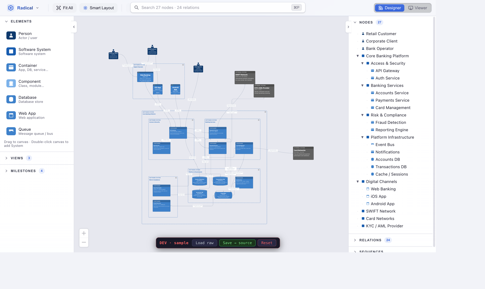
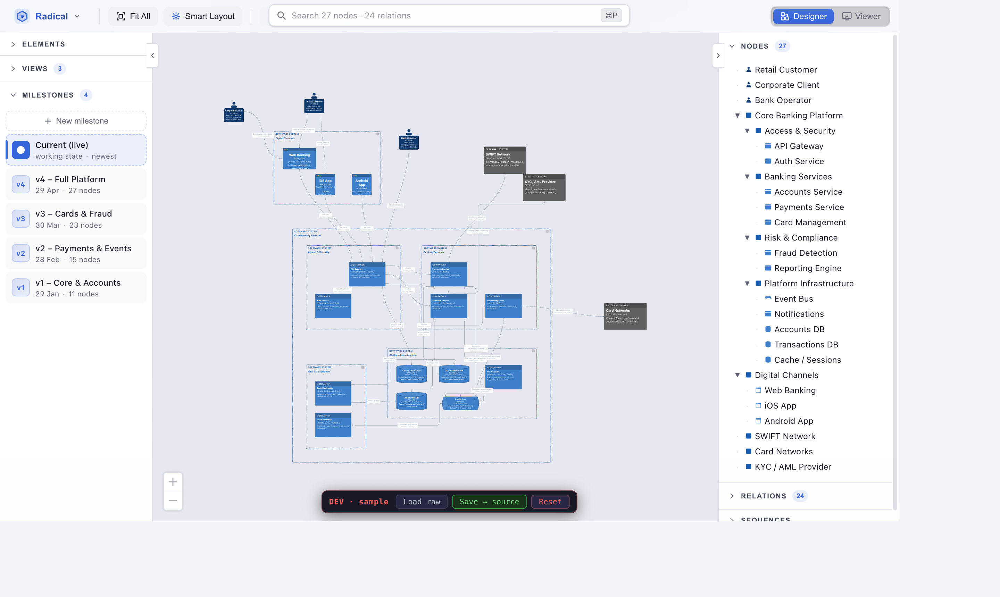
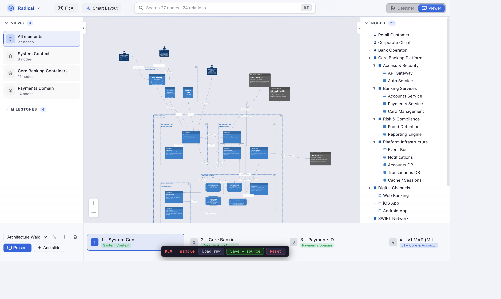

Diagrams go stale because the drawing is the document. Radical.Tools makes the model the document - views are derived from it, always consistent.
Metamodel defines the rules. Model holds the truth. Views render slices. Milestones track history.
The vocabulary of your architecture.
Defines what kinds of things can exist: node types, relation types, allowed properties. C4 ships by default - Person, Software System, Container, Component. Extend it or replace it entirely. More metamodels are coming.
Person → uses → Software System
metamodel rule
The single source of truth.
A graph of concrete nodes and relations that conforms to the metamodel. Add an element once - it's available in every view. No copy-pasting between diagrams. No drift between levels.
PaymentService → calls → StripeAPI
model instance
A filtered window onto the model.
Different audiences need different levels of detail. Static views show structure - System Context, Containers, Components. Dynamic views show interaction sequences with numbered steps on the edges. Each view has its own layout, the model stays shared.
Dynamic View → Login flow: 1 → 2 → 3
view instance
A named snapshot of the model.
Tag any state of the model with a name and date. Browse history, diff two milestones side by side, and restore any previous state. Architecture decisions get a timeline.
v2 → v3 diff: +3 nodes, -1 relation
milestone diff
Name a snapshot at any moment. Browse history, diff two versions side by side, and restore a previous state with one click.
Three layout engines: ELK (hierarchical), WebCola (live force-directed), and a simulated-annealing pipeline tuned for crossing minimisation.
Ask the model questions, detect gaps, or describe a change in plain language and let an LLM apply it as a structured patch. Works with Claude, OpenAI, Gemini, and local Ollama - your key, your API, nothing proxied.
Electron desktop app or browser - same codebase, same file format. No account, no cloud, no telemetry.
Sequence views into a slide deck. Dynamic views replay interaction flows step by step. Fullscreen walkthrough turns any model review into a structured session.
Models are JSON files on your disk. Diff in git, edit in any text editor, automate with any script.



Node.js ≥ 18, npm ≥ 9.
# Clone the repository
git clone https://github.com/tomasz-zajac-opensource/radical.tools.git
cd radical.tools
# Install dependencies
npm install
# Start in development mode
npm run dev
# Build for production
npm run build && npm start